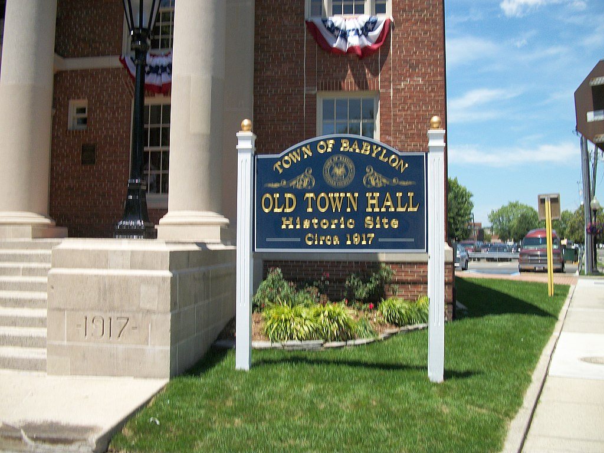

Babylon
Babylon is a village in Suffolk County, New York.
- The town developed as a summer yachting resort but experienced rapid population and diversified industrial growth after World War II.
- The commercial and housing stock in Babylon reflects its longevity as a community.
- Babylon is served by several transit options.
- The town was featured in the American version of Gordon Ramsay's Kitchen Nightmares.

Link to index